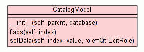

Inicio
Arboles
Indices
Ayuda
EsquipulasPy
Paquete src
::
Paquete utility
::
Modulo catgeneric
:: Clase CatalogModel
[
ocultar privados
]
[
marcos
] |
sin marcos
]
Class CatalogModel
Codigo fuente

Metodos de Instancia
[
Ocultar privados
]
__init__
(
self
,
parent
,
database
)
Codigo fuente
flags
(
self
,
index
)
Codigo fuente
setData
(
self
,
index
,
value
,
role
=
Qt.EditRole
)
Codigo fuente
Inicio
Arboles
Indices
Ayuda
EsquipulasPy
Generado por Epydoc 3.0
http://epydoc.sourceforge.net